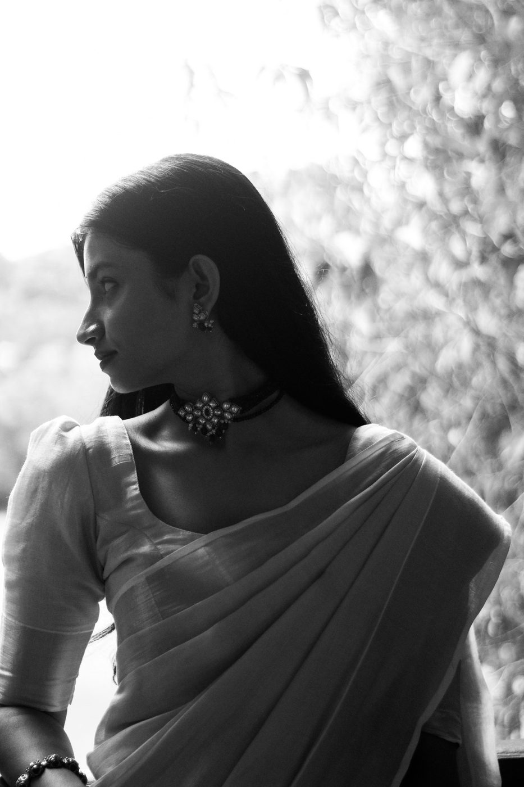
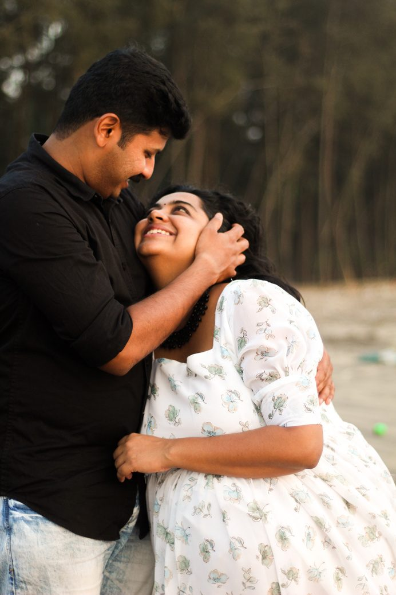
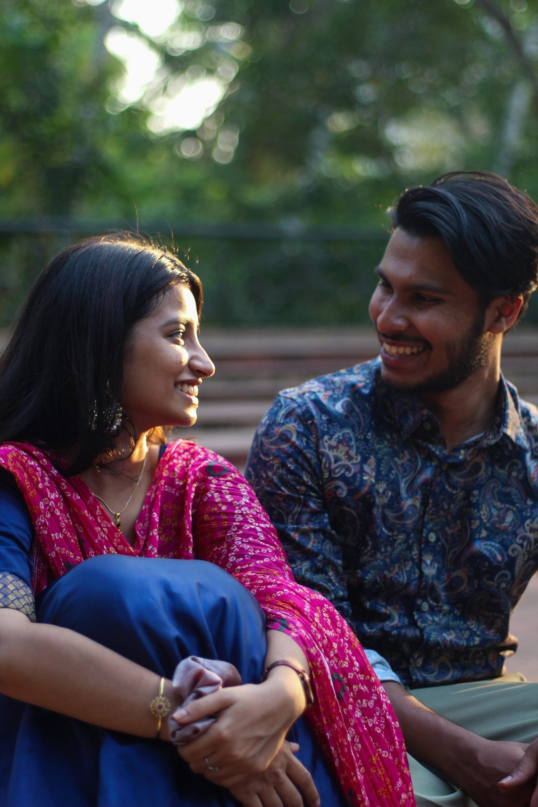
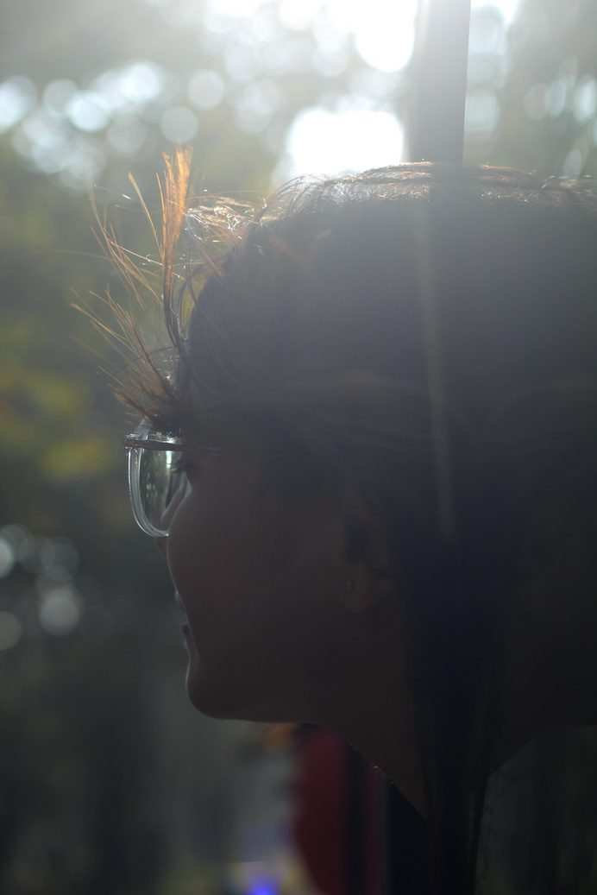
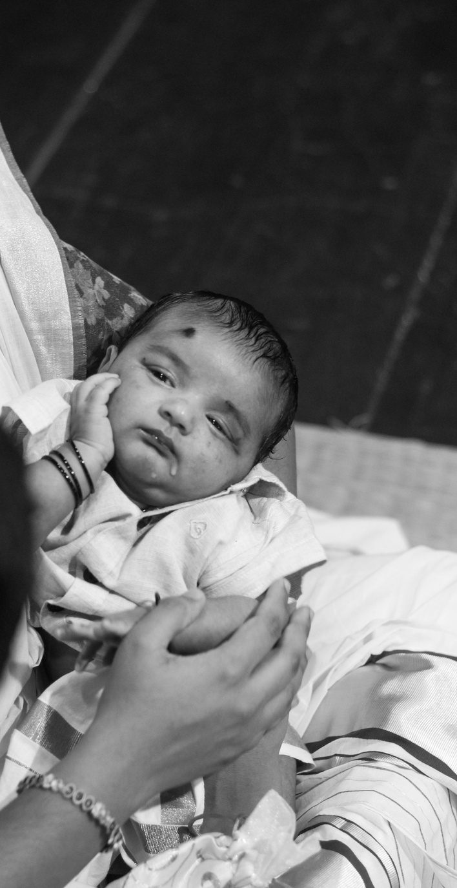
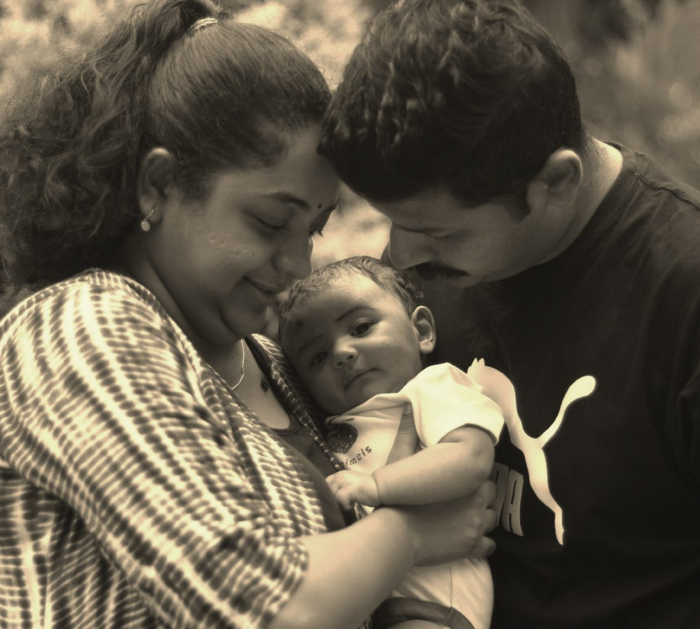
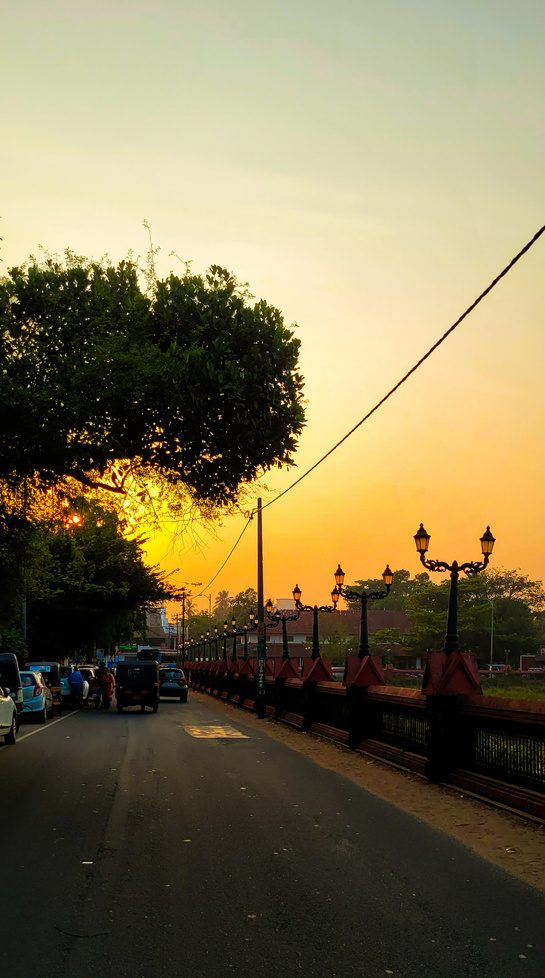

Operations. Creative Management. Storytelling.
"I like being where ideas become real."
Operations & creative management professional exploring the intersection of people, process and visual storytelling.
I work at the intersection of ideas and execution. My strength is taking something that exists as a thought, bringing the right people around it, figuring out the moving pieces, and getting it across the finish line.
I've worked across operations, production and creative environments — and somewhere along the way, photography became another way I learned to pay attention.

"Good execution is invisible when it works."
I care less about looking busy and more about things actually moving. That means clear communication, comfort with ambiguity, and a habit of noticing the small detail before it becomes a big problem — the same instinct that shows up when I'm behind a camera.
Concept, shoot-day logistics and direction for a maternity story, timed to the last good light of the day.
"And just like that, life becomes a whole lot sweeter — they're ready for the next chapter."
2025 — Role: Producer & PhotographerA couple's session built around candid movement rather than posed frames — trust built over the course of an afternoon.
"His eyes told stories that her heart carried with it. There, love bloomed."
2025 — Role: Photographer
A quiet, unposed set documenting a family on the edge of a new chapter — from sonogram to newborn.
"Tiny feet and tiny arms — one day they'll be strong enough to conquer the world."
2025 — Role: Photographer



I don't want to be defined by one job title. I'm interested in the space between operations, creativity, people, technology and storytelling — and I'm curious what I can build there.